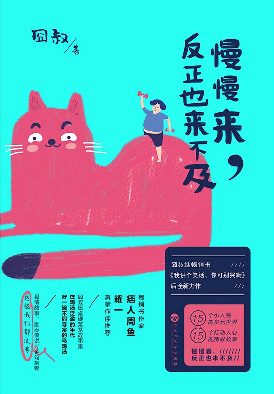

《慢慢来，反正也来不及》

总体观点
本书以黑色幽默与反套路叙事解构了当代社会普遍蔓延的“成功学焦虑”与“速成神话”：直面现实并承认“反正也来不及”，并非消极躺平，而是卸下虚妄期待、接纳平庸后的清醒与自如。
囧叔将聚光灯投向城市角落里最不起眼的小人物群像，以细腻入微的观察证明：每一个在生活泥潭中摸爬滚打的普通人，都拥有不被主流定义的独特尊严、行规技艺与生存哲学。
全书拒绝廉价煽情的精神鸡汤，以冷幽默的锋芒刺破生活的荒诞外壳，在看似戏谑荒唐的情节反转深处，流淌着对市井草莽最深沉的悲悯与人间暖意。
核心观点
-
1. “慢慢来，反正也来不及”：用反讽解构速成焦虑与内耗枷锁
当代都市人被统一的“成功时间表”驱赶着拼命狂奔，往往在未知的恐惧中耗尽心力；打破这种内耗的解药是敢于承认“人生本就来不及”，从而找回自己的步调。
面对职场三十岁危机和买房大山的恐慌，与其在失眠中内耗崩溃，不如坦然承认落后于社会标准，安安稳稳吃好眼前一碗热面。 -
2. 讨好换不来尊重：从《阿软》看好人陷阱与善良的边界
性格过软、对所有人有求必应并不能换来真正的友谊与认可，反而会沦为职场与社交链条中被随意使唤与剥削的宣泄口；善良必须长出牙齿。
《阿软》中的阮甜甜遇事只会点头说“好”，天天给办公室所有人带早点、背黑锅，直到经历一连串荒诞挫折后才明白唯有明确界限才能自立。 -
3. 底层江湖的野性自尊：不信权威的游民守住内心的底线
生存在社会边缘的各色奇人，虽然没有光鲜的身份和体面的收入，但在涉及生死、信义与尊严的骨节眼上，往往比体面人更有骨气。
《狗王周骐圣》在荒僻东郊村落开简陋动物诊所，言语粗鲁混账，但他面对虐待动物的阔少坚决拒医，宁可挨拳头也不做违心勾当。 -
4. 以毒攻毒的心理防线：荒诞现实中普通人的精神抗体
在重压与挫折面前，昂扬的励志口号往往苍白无力，反倒是略带自嘲的自黑与“顺势疗法”，能够成为普通人抵御精神崩溃的有效屏障。
《顺势疗法》通过主人公直面最坏结果的戏谑尝试，揭示出当一个人敢于把面子踩在脚底下时，外界施加的羞辱反而瞬间失去了杀伤力。 -
5. 都市深夜的诗意残响：冷酷钢筋水泥里的平民浪漫
在冰冷机械的城市运转缝隙中，最动人的浪漫往往不发生在高级写字楼，而是发生在夜班出租车、路边摊与杂货店等烟火角落里。
《诗人和出租车》中怀才不遇的地下诗人搭乘深夜的哥的车，两个被生活捶打的中年人在车厢广播与发动机轰鸣中产生了奇妙的心灵共振。 -
6. 反转叙事的冷峻锋芒：生活最大的编剧是荒诞的巧合
囧叔擅长在看似平铺直叙的市井琐事中埋下草蛇灰线，在故事末尾以出人意料的反转撕开现实的伪装，让读者在抚掌大笑之后陷入深思。
满怀算计的精明人自以为设局占尽便宜，到头来发现自己不过是命运更大圈套里的一枚棋子，机关算尽反而成就了他人的圆满。 -
7. 认清生活的真相后依然热爱：抚掌大笑走过匆匆人间
真正的成长不是变得八面玲珑或无坚不摧，而是在见识了人性的幽暗与生活的残酷之后，依然能保留一份自嘲的幽默感和对具体生活的温热关怀。
如同读者在阅读后所感慨的“抚掌而笑，嚯嚯哈哈哈哈”，笑声过后是对眼前鸡零狗碎日常的释然与和解。
全书结构
-
序言（序一）：在急功近利的时代给小人物立传
作者自述创作初衷：拒绝居高临下的道德训诫与空洞鸡汤，将目光投向金字塔底部身怀绝技或脾气古怪的普通人，奠定全书反套路幽默基调。
剖析当代人为何一边在成功学鸡汤里焦虑失眠，一边在日常琐碎里自我怀疑，倡导以平视眼光打量市井众生。 -
篇目一：《阿软》（阮甜甜的故事）
全书开篇之作：刻画性格软弱、凡事都说好的女孩阮甜甜（阿软）在职场与生活中频遭欺压，却在机缘巧合与市井温情中寻找自我边界的成长轨迹。
阿软从一个无论面对何种过分要求都习惯性点头的办公室透明人，经历一系列荒诞事件后终于学会第一次坚定说“不”。 -
篇目二：《狗王周骐圣》
讲述城郊简陋诊所里浑身痞气的兽医周骐圣的故事，刻画其医术古怪、性格混账却对生命与流浪动物怀抱极端偏执自尊的草莽形象。
周骐圣面对带着名犬前来炫耀的有钱雇主破口大骂，却通宵守着一只濒死的小土狗实施急救，展现市井边缘人的骨气。 -
篇目三：《顺势疗法》
以黑色幽默笔触探讨面对生活连环打击时的心理防御机制，通过主人公面对荒诞窘境时的自我反套路操作，展示以毒攻毒的草根生存智慧。
主人公放弃无谓的体面与反抗，主动拥抱最坏的难堪局面，反而误打误撞瓦解了对手精心构筑的心理围猎。 -
篇目四：《诗人和出租车》
描写都市午夜一辆飞驰的出租车上，落魄的业余诗人和满身烟火气的的哥之间荒诞而动人的对话，折射当代人在理想与柴米油盐夹缝中的挣扎。
诗人在后座声情并茂朗诵自己无人问津的诗句，的哥一边熟练超车一边用市井黑话精准点评，两个边缘人在夜色中惺惺相惜。 -
市井群像单元：早点摊贩、便利店员与修车老匠的十四个异彩世界
收录其余多位底层普通人的故事：起早贪黑炸油条的大哥、深夜便利店的年轻收银员、修车棚里脾性古怪的老匠人，每个人都有不为人知的一技之长与执拗坚持。
炸油条的大哥二十年如一日讲究面团发酵的温度与火候，其专业精神丝毫不逊色于五星级酒店大厨，守着属于自己的方寸尊严。 -
荒诞反转单元：命运捉弄下的悲喜人间
展现囧叔标志性的叙事功力：情节在看似平淡的琐碎推演中突然发生戏剧性倒转，令读者在出乎意料的黑色幽默中领悟生活的无常与释怀。
一场因几块钱引发的激烈市井争执，在层层误会推进后却揭开了一段深藏数年的无名善举，令人啼笑皆非又潸然泪下。 -
结语与后记：慢慢走过人间，笑对来不及的岁月
全书收束与哲学沉淀：总结这15个普通人带给作者的心灵触动，呼吁读者放下与时间盲目赛跑的执念，在不完美的真实人间从容生活。
作者以亲切坦荡的文字劝慰读者：与其为了追赶永远追不上的虚幻目标疲于奔命，不如把步子放慢，抚掌大笑，把日子过得有滋有味。